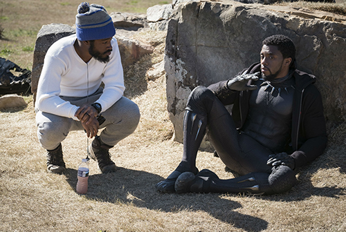
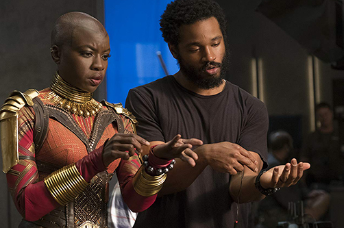
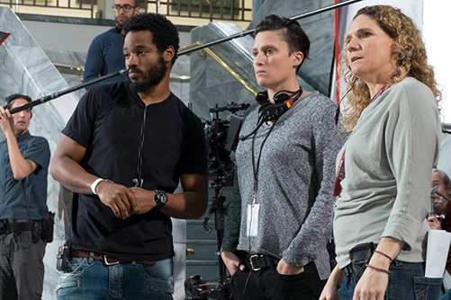
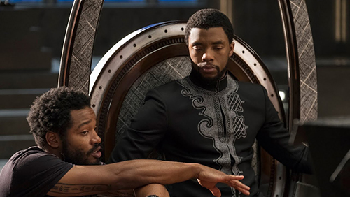
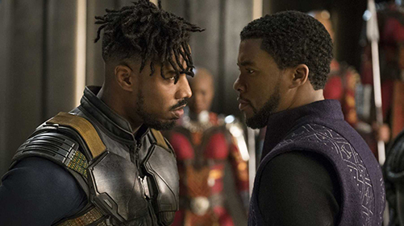
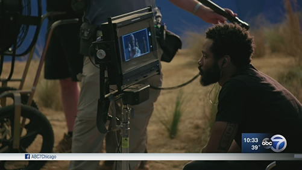
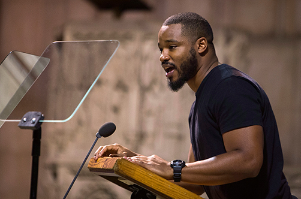
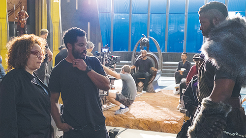

Black

Panther
Black
Panther

After the death of his father, T’Challa returns home to the African nation of Wakanda to take his rightful place as king. When a powerful enemy suddenly reappears, T’Challa’s mettle as king -- and as Black Panther -- gets tested when he’s drawn into a conflict that puts the fate of Wakanda and the entire world at risk. Faced with treachery and danger, the young king must rally his allies and release the full power of Black Panther to defeat his foes and secure the safety of his people.
Soundtrack

1.Black Panther-Kendrick Lamar
2.All The Stars-Kendrick Lamar ft. SZA
3. X-ScHoolboy Q ft. 2 Chainz, Saudi
4.The Ways-Khalid ft. Swae Lee
5.Opps-Vince Staples ft. Yugen Blakrok
6.I Am-Jorja Smith
7.Paramedic!-SOB X RBE
8.Bloody Waters-Ab-Soul ft. Anderson .Paak and James Blake
9.King's Dead-Kendrick Lamar, ft. Jay Rock, Future and James Blake
10.Redemption Interlude
11.Redemption-Zacari and Babes Wodumo
12.Seasons-Mozzy ft. Sjava and Reason
13.Big Shot-Kendrick Lamar ft. Travis Scott
14.Pray For Me-Kendrick Lamar ft. The Weeknd
Cast
 |
As the king of the African nation of Wakanda, T’Challa protects his people as the latest in a legacy line of Black Panther warriors. |  |
Erik “Killmonger” Stevens challenged the Black Panther for the throne of Wakanda with special ops skills, devious tactics, and an eye on changing the world. | ||
 |
The Wakandan Nakia protects her country from outside forces as a War Dog, one of its most accomplished espionage agents. |
 |
Okoye serves the Black Panther as a personal bodyguard and the nation of Wakanda as a torchbearer of tradition and virtue. Okoye is as deadly as she is wise, and stands as one of T’Challa’s most trusted allies and companions. |
 |
Possessing one of the most brilliant minds in the world, the Black Panther’s sister, Princess Shuri, is also the chief science officer for Wakanda, a position she cherishes much more than her royal status. |
 |
T’Challa’s mother and former queen of Wakanda. Though still grieving over the death of her husband, she is supportive of T’Challa ruling in his own way, even if that means going against what the previous king would have wanted. |
 |
Mercenary and arms dealer Ulysses Klaue plied his trade in death to become the mortal enemy of the nation of Wakanda and its protector, the Black Panther. |
 |
|
 |
A kind of priest or shaman for Wakanda’s royal court, as well as an advisor to T’Challa. He presides over the important ceremonies of the monarchy: the combat challenge, coronation, and eating of the heart-shaped herb to gain the Black Panther’s power. |
 |
Head of security for Wakanda’s border. Though he is a close friend of T’Challa, he is skeptical of T’Challa’s strength as a leader. |
|
A C.I.A. agent who T’Challa had met and worked with in the events depicted in Captain America: Civil War. Though he is unaware of Wakanda’s advanced civilization at first, he has seen T’Challa fight as the Black Panther, and both men respect each other’s character and abilities. |
Director

Ryan Coogler was born on May 23, 1986 in Oakland, California, USA as Ryan Kyle Coogler. He is a director and writer, known for Black Panther (2018), Creed (2015) and Fruitvale Station (2013). He has been married to Zinzi Evans since 2016.
|  |  |  |
|  |  | |
|  |  |  |
try this on for size